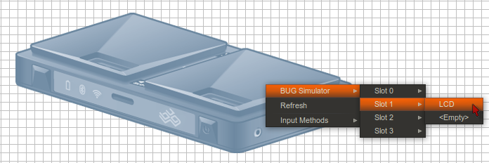

Interacting with My BUGs View
Contents |
My BUGs View
The Eclipse view called My BUGs is usually found in the Dragonfly perspective. If it is not visible, you can display it by going to: Window > Show View > Other > Dragonfly > BUGnet.

Connection Types
The My BUGs view displays any BUG Connections that are available to the SDK and allows you to interact with them. There are 3 connection types you will see in this window:
-
 BUG Simulator Connection.
BUG Simulator Connection.
-
 Static Connection (Manual).
Static Connection (Manual).
-
 Discovered BUG Connection (Physical BUG).
Discovered BUG Connection (Physical BUG).
Sometimes, My BUGs view has not refreshed to show new connections. To refresh My BUGs, click on the refresh icon  near the top of My BUGs view.
near the top of My BUGs view.
Actions in My BUGs View
- Browse any BUG Connection's Applications, Modules, or Services nodes.
- Double click the node on a BUG Connection to bring up a Physical Editor window for the Connection.
- Right click a BUG Connection to bring up a menu (see the Right Click Menu section below for details and options).
- Right click on an application in the BUG Connection Applications folder (see the Right Click Menu section below for details and options).
Launching BUG Simulator
If BUG Simulator is currently running, you will see it listed in My BUGs view. The BUG Simulator button  also shows whether the BUG Simulator is running. If the button icon is red, this means that the simulator is probably not running. If it is blank, the simulator is already running.
also shows whether the BUG Simulator is running. If the button icon is red, this means that the simulator is probably not running. If it is blank, the simulator is already running.
Hint: To stop a running instance of BUG Simulator, go to the Console view in Eclipse and click on the red Terminate button  .
.
Interacting with BUG Simulator
As noted above, you can open the BUG Simulator window from My BUGs view. Double click on the BUG Simulator element at the top of the My BUGs view to open the BUG Simulator window. You should see something like this.

In the simulator, you will see an image of a BUGbase. There are slots at the top and bottom that are designed to hold external modules that are plugged in. Right now, the simulator does not have anything plugged in. And that's a lot like how your physical BUG hardware starts.
Using Modules in BUG Simulator
The modules that you add in BUG Simulator are important, since they define the services that are available when creating applications AND when running them.
- When you create a new BUG project, you should first add the modules in BUG Simulator first.
- When running and testing an app in BUG Simulator, your app will wait until you add the modules it expects to use.
Adding a Module
The next step is to plug in some hardware. In this example, we will use the LCD module. To plug in the virtual LCD, right click on the BUGbase image and navigate to the menu item: BUG Simulator > Slot 1 > LCD

Using the BUG Simulator When Creating a New BUG Project
When you are creating a new BUG project to run on the BUG Simulator, only the currently installed modules are listed in the Service Definition window. If you added the LCD module in BUG Simulator, then you will see the ILCDModuleControl in the list of available services like in the example below:

Adding Services Manually in Code
If you did not add the LCD module or other module(s) that you need or if you used the Start BUG Simulator button in this window, then these modules will not appear in this list. However, this does not prevent you from manually adding the services you require. Refer to the Tutorial:BugWeatherApp_Part_1-Getting_Started for more information.
Using the BUG Simulator When Testing an App
When you are building and testing apps in BUG Simulator, you often have to start or restart the BUG Simulator and use the Send to BUG command to deploy the app. Your code that depends on hardware modules will only execute when the modules are present. So you will frequently need to perform the following steps to run and test your app:
- If BUG Simulator is already running, you may need to terminate the running instance first. To do this, look for the Console view in Eclipse and click on the red Terminate button
 . (Note: You can often redeploy an app into a running BUG Simulator without stopping and starting the simulator)
. (Note: You can often redeploy an app into a running BUG Simulator without stopping and starting the simulator)
- Click on the Launch BUG Simulator button

- Right-click on your BUG project in Eclipse and select Send to BUG

- Open My BUGs view and open the BUG Simulator window by double-clicking on the BUG Simulator listed in My BUGs.
- Right-click on the BUG base and add the required modules (as shown above)
BUG Connection
When BUG Simulator is launched, it will automatically appear in the My BUGs view. The same should happen for a physical BUG when it is connected to your Network. In some casees, it is necessary to create the connection manually. (If you are having trouble please see http://buglabs.net/start).
Creating a New BUG Connection
1. Click the New BUG Connection button  to manually create a BUG Connection. This button is available via the My BUGs view title bar, and by right clicking in the My BUGs view.
to manually create a BUG Connection. This button is available via the My BUGs view title bar, and by right clicking in the My BUGs view.
2. After you enter a Name and Address the Test Connection and Finish buttons will become active.
3. Click Test Connection to validate the Connection or click Finish to add it to the My BUGs view.
Right Click on BUG Connection Menu
- New BUG Connection button - Opens New BUG Connection Wizard
-
 Delete BUG Connection button - Only active for Manually created Connections
Delete BUG Connection button - Only active for Manually created Connections
-
 Refresh BUG Connection button
Refresh BUG Connection button
- Properties - Update BUG Connection Address
- Additional menu options are available when right clicking on an application in the Applications folder.
-
 Remove application button (Note: If you right click on the Applications folder this button is "Remove All applications')
Remove application button (Note: If you right click on the Applications folder this button is "Remove All applications')
-
 Import into Dragonfly SDK button
Import into Dragonfly SDK button
-
Physical Editor Properties View
'When you click on the BUGbase or any Module name tag in the Physical Editor, it will be highlighted blue and the Properties view will populate with specific information for the component. Some of these properties can be changed. For example, on the BUGbase you can enable/disable Services.
See Also
- Interacting with My BUGs in Dragonfly SDK
- BugWeatherApp Part 1-Getting Started
- BugWeatherApp Part 2-Running BUG Simulator
- Creating a Basic Application
- Connecting to BUG with VNC
- BugWeatherApp Part 3-Calling REST Web Services
- Create an App That Publishes an OSGi Service
- Start Guide Putting it All Together
- Upload an Application to BUGnet
- Interacting with BUGnet
- Download an Application from BUGnet